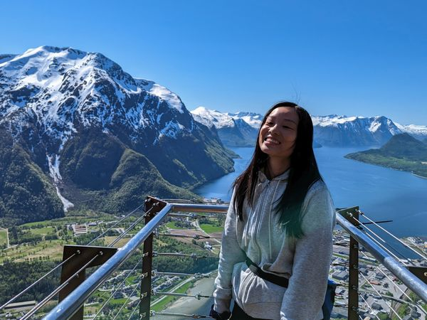
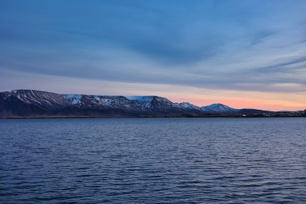

Berlin Gosh, where do I begin? Okay, I'll start with why. Ten months ago, I was in solo traveling in Switzerland when I got an anxious text from my brother: "Rammstein tickets for 2023 stadium tour goes on sale tomorrow!" Because tickets were going on sale at 10 AM, Central Europe
Scotland – 9 Day Itinerary Castles! History! Outlander! All valid reasons to visit Scotland. I visited with my partner, mother-in-law, and brother-in-law in spring 2023 so I'll have tips here on traveling with an adult family. I knew nothing about Scotland or its history before my trip, and as someone who soaks in history differently,
5 Things I Never Travel Without Aside from the obvious passport and the shoes on your feet, there are 5 things I never travel or fly on a plane without. Some of these might surprise you! Noise Cancelling Headphones Your headphones have to say "noise cancelling" or else you'll hear the person next to you snoring
Why budgets will always hit a nerve People will always have an opinion when it comes to talking about money. How to make it, how to spend it, and whether something is "worth it". I got into a debate in an Instagram reel (lol) about how much it costs to travel (from North America to Europe). The
Cycling Switzerland – 8 Day Solo Travel Itinerary Visited Switzerland in September as a solo traveller, exploring the Jungfrau region, including Lauterbrunnen, Wengen, Mürren, Grindelwald, Kandersteg, and Zürich.
 Norway Norway – 10 Day Itinerary 10 day itinerary for Norway in May or spring time. Hiking, fjords, tours, nightlife, and more.
Iceland Iceland – Day 9: Icelandic Horses, volcano crater, Barnafossar, and Hraunfossar Visited an Icelandic horse farm, a volcano crater, Barnafossar, and Hraunfossar.
Iceland Iceland – Day 8: Bifröst and Whale Watching in Hauganes Arctic Adventures Ring Road tour – whale watching in Hauganes, and Hotel Bifröst
Iceland Iceland – Day 7: Northern Iceland, Mývatn and Akureyri Northern Iceland drive from Egilsstaðir to Mývatn to Akureyri.
Iceland Iceland – Day 6: Egilsstaðir, Litlanesfoss, and Vínbúðin East Fjords, Egilsstaðir, Litlanesfoss, and Vínbúðin via Arctic Adventures Ring Road tour.
Iceland Iceland – Day 5: Höfn, Vatnajökull, Jökulsárlón Glacier Lagoon, Crystal Ice Cave Tour Jökulsárlón Iceberg Lagoon, Vatnajokull National Park, Crystal Ice Cave tour via Arctic Adventures Ring Road tour
Iceland Iceland – Day 4: Golden Circle, Skogafoss, Seljalandsfoss, Vík (Ring Road) Golden Circle, Skogafoss, Seljalandsfoss, and Vík via Arctic Adventures Ring Road tour
Iceland Iceland – Day 3: Reykjavik – Quiet Christmas Eve before Ring Road Day 3 was December 24, which is the day that most Icelanders celebrate Christmas. Most stores and restaurants are closed on this day. I wandered around the streets of Reykjavik.
Iceland Iceland – Day 2: Reykjavik – Lopapeysas, Braud, Fishmrkt, Þúfa Exploring more of Reykjavik: Fishmrkt, Þúfa, Braud & Co. bakery, Skuli Craft Beer Bar, Einstök Bar, and Laugavegur
 Iceland Iceland – Day 1: Keflavik Airport, Reykjavik Food Tour, Alda Hotel December in Iceland – arriving in Keflavik International Airport via Icelandair Saga Class, Reykjavik Food Tour, Harpa Concert Hall, and Alda Hotel
Iceland What to pack for Iceland – Reykjavik and Ring Road Preparing for my trip to Iceland, I outline how and what I pack, plus my itinerary for Reykjavik and the Ring Road!
Cabins Cabinscape Dashi cabin review Experience off-grid cabin living in Bluewater, Ontario offered by Cabinscape.
Jakarta Artotel Thamrin Boutique Hotel Artotel Thamrin is a chic, modern boutique hotel located in Jakarta, Indonesia.
Japan Chasing Mount Fuji on a bicycle Cycled through Odawara, a small city an hour away from Tokyo, to see Mount Fuji.
Japan Seaside Top Observatory One of the best views of Tokyo at night is, hands down, at the Seaside Top Observatory. You can see Tokyo Tower, Tokyo Skytree, and during a clear day, Mount Fuji.
Japan Cycle Osaka tour review Best way to see Osaka is through this small cycling tour visiting all the highlights like backstreets of Fukushima, Osaka Castle, and Tsuruhashi (Osaka's Korea Town).
Japan Cycle Kyoto bicycle tour review Explore Kyoto on a bicycle with Cycle Kyoto tour group. Visit all the highlights and eat all the things!
Japan Asahi Beer Sky Room Learn why Asahi Beer Sky Room is a phenomenal option for a cold beer and great view of Tokyo both day and night.
New Zealand Mi-Pad Smart Hotel – Queenstown, New Zealand A modern, compact smart hotel with an eco-conscious approach.